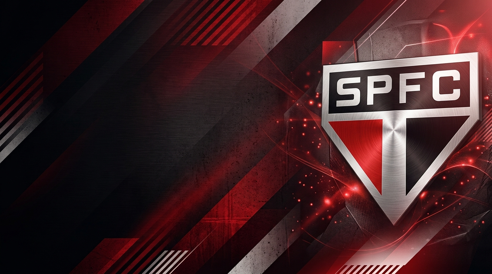

O Morumbi
O Estádio Cícero Pompeu de Toledo é a nossa casa sagrada e palco de grandes conquistas históricas desde 1960.
Capa · O Clube
Conheça a história e a tradição do Tricolor Paulista, o clube mais vitorioso do Brasil.
Ler os destaques →
O Estádio Cícero Pompeu de Toledo é a nossa casa sagrada e palco de grandes conquistas históricas desde 1960.
O São Paulo é o único clube brasileiro que conquistou 3 títulos mundiais de clubes (1992, 1993 e 2005).
Uma galeria pesada com 6 Campeonatos Brasileiros, 3 Copas Libertadores e 1 Copa do Brasil.